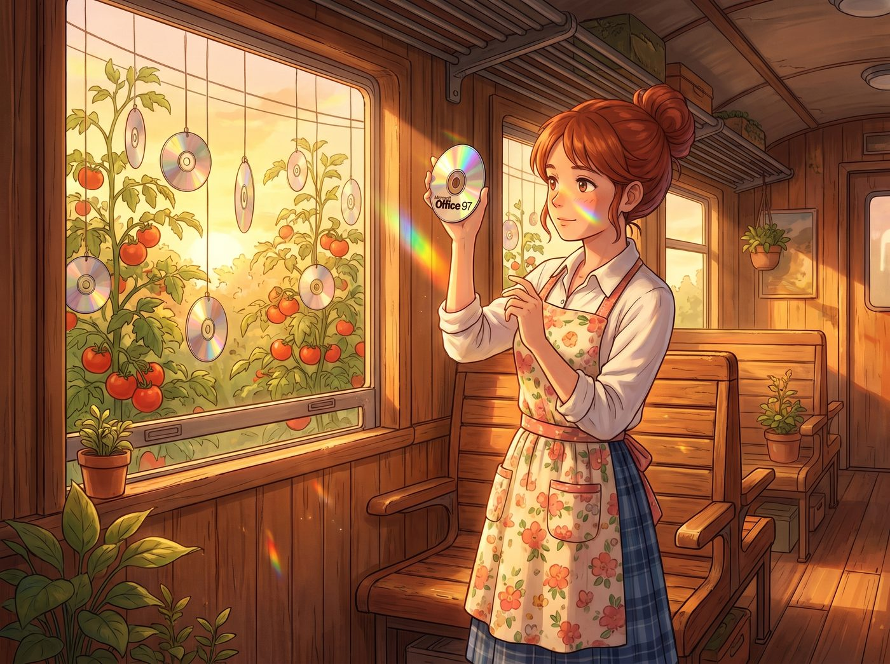

計畫性報廢

當 Max 在筆記本電腦上刷到那則關於微軟正式更改 Office 標誌並全面轉型銷售策略的新聞時，她正小心翼翼地用超細纖維布擦拭著桌上幾個宛如藝術品般珍藏的實體軟體盒。
那是幾盒保存極其完好的大盒裝中古微軟軟體，包括帶著全息雷射防偽標籤的 Office 97 和千禧年感十足的 Office 2003。對於 Max 這個堅信實體即永恆的復古文青來說，這些帶著厚厚紙本說明書和實體光碟的盒子，曾經是她抵抗數位虛無主義的最後堡壘。
但現在，新聞裡的每一個字都在無情地嘲笑她的情懷。微軟不僅要淘汰那個經典的 Office 標誌，其全新的銷售策略更是徹底宣告了買斷制實體軟體的死亡，全面轉向強制性的雲端訂閱制。
Max 突然意識到一個殘酷的物理學與軟體工程學悖論：她的 Game Boy 實體卡匣插進去就能玩，但這些微軟的實體光碟，一旦官方關閉了舊版啟動伺服器並強推新版訂閱，她手裡這些花大價錢從中古市場淘來的實體盒子，就真的只剩下盒子的功能了。
這不是什麼文化傳承，這是一筆純粹為情懷買單的智商稅。
一、被資本背叛的收藏
Max 默默地將那盒 Office 97 放回桌上，深吸了一口氣，轉頭看向正準備在歐盟反壟斷起訴書上點擊提交修正豁免補丁的實習生。
「Lily，」Max 的聲音裡失去了一貫的溫和，透著一種被資本主義深深背叛的冷酷，「把剛才那份豁免微軟底層權限的補丁刪掉。把刀重新架回他們的脖子上。我要他們血債血償。」
Chloe 原本正在喝可樂，聽到這句話差點噴出來。她走過來，看了一眼 Max 桌上的珍藏，然後爆發出了喪心病狂的嘲笑聲。
「老天啊 Maxine！我以為妳買實體卡匣是為了收藏經典遊戲！」Chloe 笑得直不起腰，用力拍著大腿，「妳居然花錢去收藏辦公室軟體？！妳是覺得 1997 年的 Excel 表格看起來比較有龐克精神，還是覺得那個會彈出來煩人的迴紋針小幫手是某種復古賽博寵物？！」
Victoria 也優雅地走了過來，用兩根手指嫌棄地拎起那盒 Office 2003，彷彿拎著一袋不可回收垃圾。「Caulfield，妳的投資邏輯簡直是一場災難。妳花錢買了一堆早就被資本市場淘汰的生產力工具？微軟更改標誌和轉向訂閱制銷售策略是必然的商業演進。妳手裡這些東西，現在連當杯墊都嫌太滑了。」
面對雙重無情嘲諷，Max 羞憤地捂住臉：「妳們不懂！這是一種對抗數位霸權的儀式感！我只是想真正擁有一個軟體，而不是每個月給矽谷巨頭交租金！」
二、從未真正擁有的殘酷真相
一直沒有說話的 Lily，這時輕輕推了推反光的圓框眼鏡。她沒有嘲笑 Max，而是以一種極度專業的法務態度，審視著桌上的實體光碟。
「Max 學姐，在法律層面上，您必須接受一個殘酷的事實：根據微軟從一九九零年代就寫入的終端用戶授權協定，您從來沒有擁有過這些軟體，您買的只是一張寫著使用許可的塑膠片。」Lily 溫柔地給出了致命一擊。
就在 Max 徹底絕望，準備把這些盒子扔進垃圾桶時，Lily 的話鋒卻突然一轉。
「但是，」Lily 的大眼睛裡重新燃起了那種令人不寒而慄的合規掠奪光芒，「微軟利用標誌更換與銷售策略的強制轉型，單方面切斷實體買斷制用戶的啟動權限，這觸及了聯邦貿易委員會關於計畫性報廢與消費者欺詐的紅線。」
Lily 轉過身，手指在鍵盤上飛舞，迅速打開了一個新的投訴模板。
「我不能用歐盟的反壟斷法去幫您討回買中古光碟的錢，因為那在法理上不成立。但我可以代表復古數位檔案館——也就是您的書桌，向環保署與聯邦貿易委員會發起一項針對微軟的電子垃圾製造與不公平商業行為的聯合微型訴訟。我會控告他們的新銷售策略，導致全球數千萬張原本可以離線運作的實體光碟被迫淪為無法降解的有害塑膠廢棄物，嚴重違反了環境永續標準。」
Lily 按下發送鍵，回頭對著 Max 露出了一個純潔無暇的微笑：「我已經要求他們為您的每一張實體光碟提供終身免驗證的離線啟動金鑰，外加精神損失補償。作為一家正在努力維持環保與社會責任形象的巨頭，他們的法務部為了避免這種極端刁鑽的環保公關危機，通常會選擇直接賠錢息事寧人。」
Chloe 呆呆地看著實習生：「妳就為了 Max 買了幾個破光碟的智商稅，給微軟扣了一頂破壞地球環境的大帽子？」
「這叫將個人消費情緒轉化為行政打擊動能，Price 學姐。」Lily 乖巧地回答。
三、田園驅鳥神器
這時，Kate 繫著圍裙從外面走進來。她看到桌上散落的微軟安裝光碟，眼睛微微一亮。
「Max，妳這些光碟背面的雷射反光真漂亮呢。」小天使溫柔地拿起一張 Office 97 的光碟，「我在車廂外面種的番茄最近總是被烏鴉偷吃。我能用細線把這些光碟掛在番茄藤上嗎？陽光一照，它們就能閃閃發光，把那些貪吃的小鳥趕走了。」
看著實習生用最頂級的環保法規幫自己討回公道，再看看小天使將資本主義的淘汰產物變成了最溫馨的田園驅鳥神器，Max 終於釋然了。她把那盒 Office 97 塞進了 Kate 手裡，徹底治好了自己的數位資產恐慌症。在這個車廂裡，任何智商稅最終都會被轉化為某種荒謬卻實用的生活藝術。